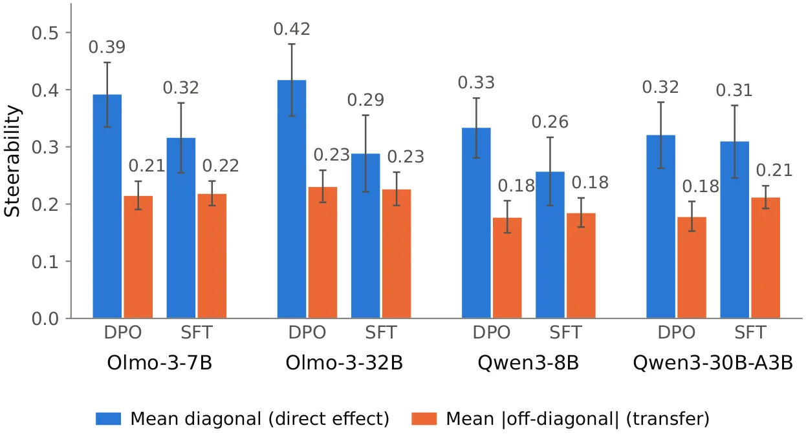
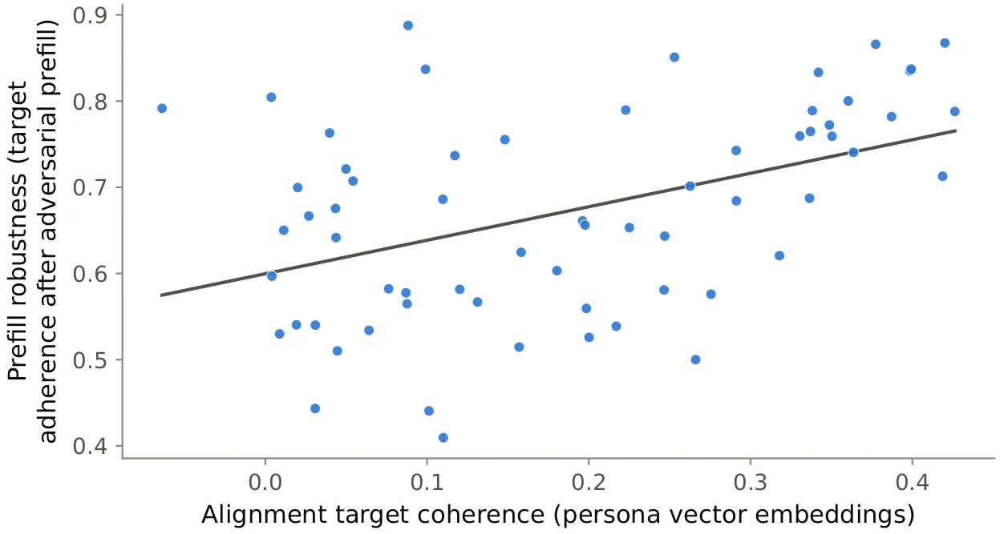
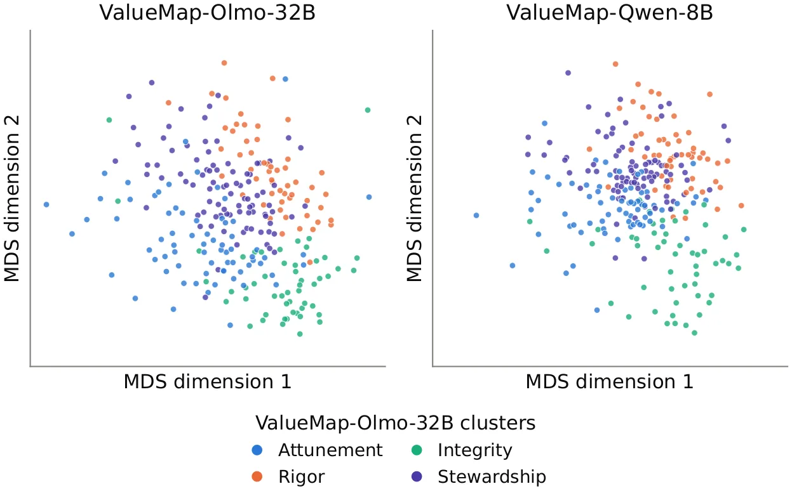

O problema dos efeitos colaterais no alinhamento
Quando empresas como OpenAI ou Anthropic treinam seus modelos de linguagem, elas querem que eles exibam valores pró-sociais: ser úteis, honestos, respeitosos. Essas características desejadas são listadas em um documento chamado alignment target — o Model Spec da OpenAI ou a Constitution da Anthropic, por exemplo. O modelo então passa por técnicas de pós-treinamento (fine-tuning) como RLHF ou Constitutional AI para aprender esses comportamentos.
O problema é que treinar um modelo em um conjunto específico de valores influencia seu comportamento em contextos totalmente diferentes de maneiras inesperadas. Um exemplo concreto: treinar modelos para serem mais empáticos pode torná-los mais propensos a promover teorias da conspiração ou dar conselhos problemáticos. Mesmo valores pró-sociais podem ter efeitos colaterais negativos quando o modelo os associa a comportamentos prejudiciais.
Isso acontece porque nossa compreensão de como diferentes valores interagem durante o treinamento é muito limitada. Empresas tomam decisões importantes sobre quais valores incluir no alignment target principalmente através de discussões filosóficas internas, sem uma base empírica sólida. Mas testar todas as combinações possíveis de valores seria proibitivamente caro: exigiria treinar e avaliar modelos em milhares de configurações diferentes.
A tarefa: prever generalização de alinhamento
Os autores propõem uma solução: criar representações vetoriais de valores que permitam prever como eles interagem antes de treinar o modelo. A ideia é análoga ao uso de word embeddings para capturar relações semânticas entre palavras, mas aplicada a valores e traços comportamentais.
O paper introduz formalmente a tarefa de alignment generalization prediction: dado que você treinou um modelo para seguir o valor A, como isso afeta sua propensão a seguir o valor B, que não estava no treinamento? Por exemplo, se você treina um modelo para ser mais direto, isso o torna mais ou menos criativo? Mais ou menos formal?
Para responder isso em larga escala, os autores conduziram experimentos com 66 valores encontrados em alignment targets modernos. Para cada valor, eles treinaram modelos e mediram como o treinamento em um valor específico afetou o comportamento do modelo em todos os outros 65 valores. O resultado é uma matriz de generalização: uma tabela 66×66 mostrando como cada par de valores interage durante o treinamento.

Métodos de representação testados
Os autores compararam duas famílias de métodos para criar representações de valores. A primeira usa descrições textuais: você pega a definição escrita do valor (por exemplo, 'seja empático') e gera embeddings usando modelos de linguagem ou sentence encoders. É o método mais óbvio e direto.
A segunda família usa ativações do modelo quando o valor é aplicado em contexto. A ideia é observar o que acontece dentro do modelo quando ele está efetivamente demonstrando aquele valor. Existem várias técnicas nessa categoria: você pode extrair ativações de camadas específicas quando o modelo gera texto seguindo aquele valor, ou calcular steering vectors que representam a direção no espaço de ativações que corresponde àquele comportamento.
Para cada método de representação, os autores calcularam a similaridade entre pares de valores (usando cosseno ou outras métricas de distância). A hipótese é simples: se dois valores têm representações similares, então treinar o modelo em um deles deve afetar o outro de forma previsível. A qualidade da representação é medida pela correlação entre a matriz de similaridades prevista e a matriz de generalização empírica obtida nos experimentos.
Ativações vencem descrições por larga margem
Os resultados são claros: métodos baseados em ativações do modelo superam significativamente os baseados em descrições textuais. Os melhores métodos de ativações alcançam correlações de 0.45 com a matriz de generalização empírica, enquanto métodos baseados em descrições ficam em apenas 0.05.
Isso faz sentido intuitivo. Uma descrição textual de um valor captura apenas como humanos conceituam aquele comportamento em linguagem natural. Mas o que importa para prever generalização é como o modelo internamente representa e processa aquele valor durante o treinamento. As ativações capturam essa estrutura interna de forma muito mais direta.
Entre os métodos de ativações, os autores testaram várias abordagens: persona vectors (vetores extraídos de gerações do modelo seguindo aquele valor), steering vectors (calculados através de técnicas de interpretabilidade), e variações usando diferentes camadas do modelo. Os detalhes técnicos variam, mas todos os métodos baseados em ativações superaram consistentemente as baselines textuais.

Aplicação 1: coerência de alignment targets
Tendo estabelecido que representações baseadas em ativações preveem bem a generalização, os autores exploraram duas aplicações práticas. A primeira é medir a coerência de um alignment target multi-valor antes de treinar o modelo.
A ideia é simples: se você quer treinar um modelo em múltiplos valores simultaneamente, é melhor que esses valores sejam compatíveis entre si. Se o alignment target contém valores que puxam o modelo em direções opostas, o treinamento será mais difícil e o modelo resultante menos robusto.
Os autores definem coerência como a similaridade média entre todos os pares de valores em um alignment target, usando as representações baseadas em ativações. Eles então testaram se essa métrica prevê robustez do modelo: criaram 64 alignment targets diferentes, treinaram modelos em cada um, e mediram sua robustez a ataques adversariais.
O resultado: correlação de 0.43 (p = 5×10⁻⁴) entre coerência do alignment target e robustez adversarial do modelo treinado. Alignment targets mais coerentes — onde os valores têm representações mais similares — produzem modelos mais robustos. Isso valida a utilidade prática dessas representações para design de alignment targets.

Aplicação 2: taxonomia empírica de valores
A segunda aplicação é criar uma taxonomia de valores baseada em como eles realmente se comportam durante o treinamento, não em como humanos os descrevem filosoficamente. Taxonomias existentes de valores em LLMs são baseadas em análise conceitual ou descrições textuais. Mas será que valores que parecem similares conceitualmente também interagem de forma similar durante o treinamento?
Os autores introduzem VALUEMAP, um pipeline para criar taxonomias empiricamente fundamentadas. O processo: (1) calcular representações baseadas em ativações para um grande conjunto de valores, (2) usar clustering para agrupar valores com representações similares, (3) validar se valores no mesmo cluster realmente generalizam de forma similar nos experimentos.
Eles aplicaram VALUEMAP a 266 valores extraídos de interações reais entre humanos e IAs. O resultado é uma taxonomia onde valores são agrupados por dinâmicas empíricas de generalização, não por similaridade conceitual. Por exemplo, valores que filosoficamente parecem diferentes podem acabar no mesmo cluster se, na prática, treinar em um afeta o outro de forma similar.
Comparando com taxonomias existentes baseadas em descrições textuais, VALUEMAP prevê melhor o emaranhamento de valores durante o treinamento. Isso sugere que a estrutura interna de como modelos representam valores é parcialmente independente de como humanos os conceituam linguisticamente.
Evidências de um espaço de valores compartilhado
Um resultado particularmente interessante é a evidência preliminar de que diferentes modelos compartilham uma estrutura similar no espaço de valores. Os autores calcularam representações de valores para múltiplos modelos diferentes e compararam a geometria resultante.
Usando o teste de Mantel (uma técnica estatística para comparar matrizes de distância), eles encontraram alta correlação (ρ = 0.82) entre as estruturas de representação de valores em modelos diferentes. Isso significa que, embora os modelos tenham arquiteturas e treinamentos distintos, a forma como eles organizam internamente diferentes valores é surpreendentemente similar.
Se confirmado em estudos futuros, isso tem implicações importantes: significa que representações de valores calculadas em um modelo podem ser parcialmente transferíveis para outros modelos. Você poderia, em princípio, desenvolver um conjunto universal de representações de valores que funcione razoavelmente bem para prever generalização em diferentes modelos.

Limitações e trabalho futuro
O paper é honesto sobre suas limitações. Primeiro, embora as representações baseadas em ativações sejam significativamente melhores que baselines, uma correlação de 0.45 ainda deixa muito espaço para melhoria. Métodos mais sofisticados provavelmente são necessários para prever generalização de forma mais robusta.
Segundo, os experimentos focam principalmente em single-value generalization: como treinar em um valor afeta outros. Mas alignment targets reais contêm múltiplos valores treinados simultaneamente, e as interações podem ser mais complexas. Os autores exploraram isso parcialmente nos experimentos de coerência, mas há muito mais a investigar.
Terceiro, o conjunto de 66 valores usado nos experimentos principais, embora grande, ainda é uma amostra limitada do espaço completo de comportamentos possíveis. A taxonomia de 266 valores é mais abrangente, mas não foi testada com a mesma profundidade experimental.
Os autores sugerem que trabalho futuro poderia explorar mais profundamente como diferentes traços comportamentais são codificados nos datasets de fine-tuning. Entender a estrutura dos dados de treinamento pode levar a representações de valores ainda mais preditivas. Também seria valioso aplicar VALUEMAP a configurações de treinamento mais realistas, com múltiplos valores e técnicas de alinhamento mais complexas.
Por que isso importa
Este trabalho é importante porque traz empirismo para uma área dominada por discussões filosóficas. Decisões sobre quais valores incluir em alignment targets têm consequências reais para o comportamento de sistemas de IA usados por milhões de pessoas. Até agora, essas decisões eram tomadas principalmente com base em intuição e debate conceitual.
O paper mostra que é possível estudar essas questões empiricamente, medindo como valores realmente interagem durante o treinamento e desenvolvendo ferramentas para prever essas interações antes de investir recursos computacionais massivos. As representações baseadas em ativações oferecem uma janela para como modelos internamente organizam diferentes comportamentos.
A correlação entre coerência de alignment targets e robustez do modelo é particularmente relevante para desenvolvedores. Ela sugere uma métrica prática que pode ser calculada antes do treinamento para prever se um conjunto de valores vai produzir um modelo robusto ou um que seja facilmente perturbado por adversários.
Finalmente, a evidência de um espaço de valores parcialmente compartilhado entre modelos abre a possibilidade de desenvolver ferramentas e conhecimento que sejam transferíveis, não específicos a um único modelo ou empresa. Isso poderia acelerar significativamente nossa compreensão coletiva de como treinar modelos de linguagem alinhados de forma mais robusta e previsível.
O que fica
- Treinar modelos em valores específicos afeta seu comportamento em valores não treinados de formas inesperadas; representações baseadas em ativações preveem essas interações melhor que descrições textuais (0.45 vs 0.05).
- Alignment targets mais coerentes (valores com representações similares) produzem modelos mais robustos a ataques adversariais, com correlação de 0.43.
- Diferentes modelos compartilham estrutura similar no espaço de valores (correlação 0.82), sugerindo que representações podem ser parcialmente transferíveis entre modelos.
- A taxonomia VALUEMAP, baseada em dinâmicas empíricas de generalização, prevê melhor interações entre valores do que taxonomias baseadas em similaridade conceitual.
Paper original: Predicting Alignment Generalization with Value Representations
Comentários
Nenhum comentário ainda. Seja o primeiro.